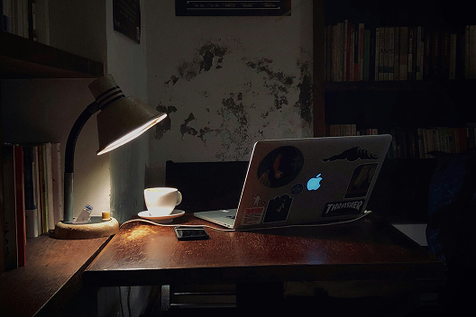
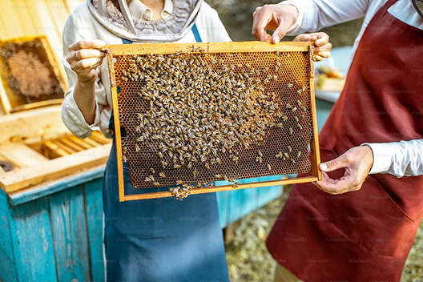
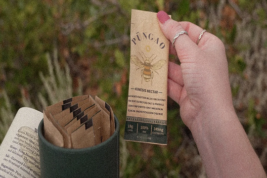
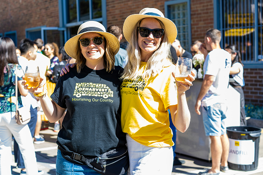
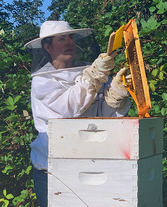

It all began with burnout.
Our founder, drained from long hours and constant colds, turned to Manuka honey for recovery.
What started as a small daily ritual soon became a quiet moment of healing.

But finding real Manuka wasn’t easy.
Many products on shelves were diluted or falsely labeled. Determined to uncover authenticity, our founder connected directly with New Zealand’s beekeepers and the UMF™ certification —
the gold standard that ensures purity, potency, and genuine origin.

Still, there was a gap.
Everyone wanted to stay healthy, but few remembered to restock their honey during busy weeks.
That’s when the idea struck — pure Manuka honey, in single-serve sachets that fit seamlessly into everyday life.
From morning coffees to post-run boosts, Mīere makes wellness simple, sweet, and portable.

Our goal became simple.
Make the world’s most powerful natural superfood effortless.
Today, Mīere is trusted by thousands who’ve made it part of their daily ritual.
We’re building a global hive of people who believe in balance, purity, and small acts of care.
Mīere helps you live golden — naturally, sustainably, and wholeheartedly.

What began as a search for healing turned into a lifelong passion for genuine wellness. After discovering the power of true Manuka honey, Hana set out to make its benefits simple, accessible, and trustworthy for everyone. Guided by care for both people and planet, she continues to pour heart, health, and honey into every sachet — keeping the golden ritual alive, one drop at a time.
Support Us Here